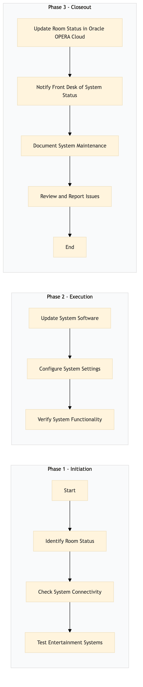

| Role | Steps |
|---|---|
| Housekeeping Agent | 1.1 3.1 3.2 |
| IT Support Technician | 1.2 1.3 2.1 2.2 2.3 3.3 3.4 |
| Step | Name | Role | System | Input | Output | KPI | Dec? | Exc? | Pain Point / Risk |
|---|---|---|---|---|---|---|---|---|---|
| 1.1 | Identify Room Status | Housekeeping Agent | Oracle OPERA Cloud | Room status from Oracle OPERA Cloud | Updated room status in Oracle OPERA Cloud | Less than 2 minutes | N | Y | Incorrect room status updates leading to system malfunctions |
| 1.2 | Check System Connectivity | IT Support Technician | Oracle OPERA Cloud, Honeywell INNCOM | Room connectivity data from Oracle OPERA Cloud | Connectivity status report | Less than 5 minutes | Y | N | Network issues causing system downtime |
| 1.3 | Test Entertainment Systems | IT Support Technician | Oracle OPERA Cloud, Honeywell INNCOM | Connectivity status report | System test results | Less than 10 minutes | Y | N | Hardware failures affecting system performance |
| 2.1 | Update System Software | IT Support Technician | Oracle OPERA Cloud, Honeywell INNCOM | System test results | Updated software version | Less than 30 minutes | Y | N | Software compatibility issues with hardware |
| 2.2 | Configure System Settings | IT Support Technician | Oracle OPERA Cloud, Honeywell INNCOM | Updated software version | Configured system settings | Less than 15 minutes | Y | N | Incorrect configuration leading to operational errors |
| 2.3 | Verify System Functionality | IT Support Technician | Oracle OPERA Cloud, Honeywell INNCOM | Configured system settings | Functionality verification report | Less than 5 minutes | Y | N | System malfunctions affecting guest experience |
| 3.1 | Update Room Status in Oracle OPERA Cloud | Housekeeping Agent | Oracle OPERA Cloud | Functionality verification report | Updated room status in Oracle OPERA Cloud | Less than 2 minutes | N | Y | Incorrect room status updates leading to system malfunctions |
| 3.2 | Notify Front Desk of System Status | Housekeeping Agent | Oracle OPERA Cloud | Updated room status in Oracle OPERA Cloud | Notification to Front Desk | Less than 1 minute | N | Y | Delayed notifications affecting guest check-in |
| 3.3 | Document System Maintenance | IT Support Technician | Oracle OPERA Cloud, Honeywell INNCOM | Functionality verification report | Maintenance log entry | Less than 5 minutes | N | Y | Incomplete maintenance logs leading to operational oversight |
| 3.4 | Review and Report Issues | IT Support Technician | Oracle OPERA Cloud, Honeywell INNCOM | Maintenance log entry | Issue report to IT Manager | Less than 10 minutes | Y | N | Undetected issues causing guest dissatisfaction |
This process outlines the management of in-room entertainment systems at a full-service Marriott hotel, ensuring seamless guest experience and efficient operations.